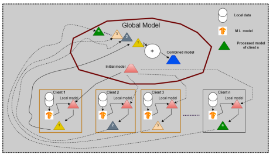

Nidhi Saxena, Kishore Babu Nampalle, Balasubramanian Raman: Semantic segmentation of multispectral images using res-seg-net model, Proceedings of IEEE 14th International Conference on Semantic Computing (ICSC), February 3-5, San Diego, California, USA, 2020. (Published)

Dr. N Kishore Babu
Assistant Professor
Indian Institute of Information Technology Ranchi, India.
Research areas: Medical Imaging, Image Processing, Computer Vision, Machine Learning, Security, AI.
BIOGRAPHY
Dr. N Kishore Babu is an Assistant Professor in the Department of Computer Science and Engineering at the Indian Institute of Information Technology Ranchi (IIIT Ranchi), India. He is actively involved in teaching, research, mentoring, and academic administration at undergraduate, postgraduate, and doctoral levels. His research interests include Medical Imaging, Image Processing, Computer Vision, Machine Learning, and Artificial Intelligence, with a strong emphasis on developing robust and efficient computational methods for real-world intelligent systems.
He earned his Ph.D. in Computer Science and Engineering from IIT Roorkee under the supervision of Prof. Balasubramanian Raman, where his doctoral research focused on deep learning–based medical image computing and secure image processing. His work culminated in a successful thesis defense in June 2024 and contributed novel insights to automated image analysis. He also holds an M.Tech. in Computer Science and Engineering from IIT Roorkee, which provided him with a strong foundation in advanced computing concepts and research methodologies. Throughout his academic career, Dr. Babu has demonstrated sustained scholarly excellence and has received several prestigious awards and merit-based scholarships, including the Prathibha Award (2006), scholarships from the Government of Andhra Pradesh, and high rankings in competitive examinations such as EAMCET and GATE. He has also received research and travel support from organizations including the Government of India, DORA–IIT Roorkee, and Microsoft Research.
His research contributions are reflected in a substantial body of peer-reviewed publications in reputed international journals and conferences. His work spans diverse areas such as semantic segmentation of multispectral imagery, deep learning models for medical image analysis, privacy-preserving image processing frameworks, and attention-based neural networks integrating physiological signals for personality analysis. He has published in well-known venues including IEEE ICSC, IEEE MIPR, and IJCNN, with additional accepted work in upcoming conferences such as IEEE CINS. Beyond publications, he actively serves the research community as a reviewer for several prominent conferences and journals, including CVIP, ICONIP, MIDL, Neurocomputing, and the Journal of Real-Time Image Processing, reflecting his commitment to maintaining high standards of scientific rigor and research quality.
Dr. Babu also brings extensive teaching experience, having taught a wide range of courses such as Database Management Systems, Machine Learning, Natural Language Processing, Digital Logic Design, Advanced Database Systems, and core programming subjects in C, C++, Java, and Python, along with topics in operating systems and web technologies. His teaching philosophy emphasizes clarity, accessibility, and critical thinking, aiming to bridge theoretical concepts with practical understanding. He has mentored and supervised numerous B.Tech., M.Tech., and Ph.D. students, guiding them through academic projects and research while fostering innovation, ethical research practices, and independent problem-solving skills.
In addition to his academic and research roles, Dr. Babu contributes significantly to institutional service and academic leadership at IIIT Ranchi. He has served in various capacities, including Warden, Member of the Examination Committee, Faculty-in-Charge for Student Mentorship and Wellness, and as a member of discipline and anti-ragging committees, demonstrating his commitment to building a safe, inclusive, and supportive academic environment. He is also actively engaged in invited talks, webinars, workshops, and conferences at national and international levels on contemporary topics such as digital fraud prevention, explainable AI, and transparent statistical modeling, and continues to pursue impactful research that bridges theory and practice for broader societal benefit.
EDUCATION
-
Ph.D., Department of Computer Science and Engineering, IIT Roorkee.
-
M.Tech., Department of Computer Science and Engineering, IIT Roorkee.
⬆ Back to Menu
AWARDS AND HONORS
-
Attended and Presented (Offline) my research paper in IEEE International Conference on Computational Intelligence and Network Systems (CINS), which was held on Novenber 25-26, 2025, BITS Pilani, Dubai Campus, Dubai, United Arab Emirates.
-
Attended and Presented (Offline) my research paper in IEEE International Conference on Semantic Computing (ICSC 2020), which was held on Feb 3-5, 2020, San Diego, California, USA.
-
Received Microsoft research funds to attend IEEE International Conference.
-
Got US visa with 10 years validity, i.e, valid up to January 15, 2030.
-
Received Microsoft research funds from IIT Roorkee to attend IEEE International Conference.
-
Received Alumni Funds Funds (Travel Grant) from the Indian Institute of Technology Roorkee to present my Research paper at the International Conference.
-
Received M.H.R.D fellowship from the Govt. of India.
-
Got merit scholarship for securing first rank in Secondary School Examination at district level from Indian Bank.
-
Received the Honorarium from District collector for securing the Highest marks in SSC Public Examination.
-
Awarded a certificate of merit for scoring in the General Knowledge Talent Test.
-
Awarded a certificate for participating in Ethical Hacking as an active participant.
-
Attended as a judge for SOCIOTHON conducted by NSS IIT Roorkee in October 2023.
-
Attended as a judge for NATIONAL SOCIAL SUMMIT conducted by IIT Roorkee from 10-11 Feb 2024.
⬆ Back to Menu
ADMINISTRATIVE DUTIES
-
Warden (Block 3), Boy’s Hostel SAJHA (Khelgaon Housing Complex), IIIT Ranchi. (July 23, 2025 - Till Date)
-
Member, Examination Committee, IIIT Ranchi. (July 23, 2025 - Till Date)
-
Member, Institute Disciplinary Committee, IIIT Ranchi. (July 23, 2025 - Till Date)
-
Faculty-in-Charge, Student Mentorship & Wellness, IIIT Ranchi. (July 23, 2025 - Till Date)
-
Faculty-in-Charge, Newsletter & Magazine, IIIT Ranchi. (July 23, 2025 - Till Date)
-
Member, Anti-Ragging Squad, IIIT Ranchi. (July 23, 2025 - Till Date)
⬆ Back to Menu
EXPERIENCE
-
ASSISTANT PROFESSOR, Department of Computer Science and Engineering, IIIT Ranchi. (13-03-2025 to till date)
-
FACULTY, Department of Computer Science and Engineering, IIIT Ranchi. (08-08-2024 to 12-03-2025)
-
ASSISTANT PROFESSOR, Department of Computer Science and Engineering, Vignan's Foundation for Science, Technology & Research (Deemed to be University), INDIA. (June 2017 – December 2018)
-
TEACHING ASSISTANT, Department of Computer Science and Engineering, Indian Institute of Technology Roorkee. (January 2019 - December 2023)
-
REVIEWER
Conferences:
• International Conference on Computer Vision & Image Processing (CVIP)
• International Conference on Electronics, Electrical and Computer Engineering (ICE3)
• International Conference on Computer Vision and Machine Intelligence (CVMI)
• IEEE India Council International Conference (INDICON)
• International Conference on Neural Information Processing (ICONIP)
• International Joint Conference on Neural Networks (IJCNN)
• International Conference on Pattern Recognition and Machine Intelligence Conference (PReMI)
• International Conference on Medical Imaging with Deep Learning (MIDL)
• International Conference on Artificial Intelligence for Healthcare (AIHC)
• International Conference on Recent Advances in Intelligent and Sustainable Technologies (RAIST) • International Conference on Recent Advances in Electronics, Communication, Computing, Automation, and Power (RECCAP<\b>)Journals:
• Journal of Real-Time Image Processing
• Neural Computing and Applications
• Neurocomputing
• IEEE Open Journal of the Communications Society
• Scientific Reports
• Computational Intelligence
⬆ Back to Menu
PATENT
-
Kishore Babu Nampalle and Ankita Kumari, “AI-based vision screening device to detect ocular abnormalities,” UK Registered Design No. 6449352, June 14, 2025. (Published)
⬆ Back to Menu
THESIS SUPERVISED
| Degree | Thesis Supervised |
|---|---|
| Ph.D. | 1 Ongoing |
| M.Tech. | 3 Ongoing |
| B.Tech. | 10 Completed; 10 Ongoing |
STUDENTS DETAILS
Ph.D. Theses
| S.No | Thesis Details |
|---|---|
| 1 | Kedika Prashantha Reddy (2025DR106) : AI and Machine Learning (2025-Present) |
M.Tech Theses
| S.No | Thesis Details |
|---|---|
| 1 | Nirmal Sagar Tigga (2024PG103) : Hybrid Model-based land use and land cover classification using Satellite Imagery (2024-Present) |
| 2 | Ravi Ranjan (2024PG108) : Multi-Class Depression Classification via Large Language Models (LLMs) (2024-Present) |
| 2 | Shardul Bhardwaj (2024PG101) : Quantum Inspired Algorithm for Defense Application (2024-Present) |
B.Tech Theses
| S.No | Thesis Details |
|---|---|
| 1 | Thipparaju Thilak Sai (2021UG1094): Deepfake Detection using Convolutional Vision Transformers and Convolutional Neural Networks (2021-25) | 2 | Ankit Kumar (2021UG3020), Siftain Ahmad (2021UG3021), Ankit Rajpoot (2021UG1097): Temporal Analysis and Prediction of Real Estate Dynamics with High Frequency Data (2021-25) |
| 3 | Aditya Anand (2021UG1076): Prescription Analysis in pharmacy Networks for Supply Chain Optimization (2021-25) |
| 4 | Ambugal Sunny Heeth (2021UG3028): Fracture Detection and Classification (2021-25) |
| 5 | Amitesh Patel (2021UG1044), Aditya Kumar (2021UG1017): Hybrid Collaborative Filtering with Deep Learning for Personalized Recommendations (2021-25) |
| 6 | Abhishek Kumar (2021UG1063), Paramveer Singh (2021UG1064): Sentiment Analysis in Financial News Articles for Stock Marcket Exchange (2021-25) |
| 7 | Aniket Das (2022UG1054), Titiksha Mukhopadhyay (2022UG1060), Vanshika Lal (2022UG1064), Yash Mehta (2022UG1071): Autonomous Driving Application Boosted by Rotation Invariant Techniques (2022-Present) |
| 8 | Adarsh Kumar Bhardwaj (2022UG3020), Abhinav Singh (2022UG3021), Abhinav Patel (2022UG1081): A Comparative Study of Convolutional, Graph-Based, and Graph-AttentionEnhanced CNN Models for CIFAR-10 Image Classification (2022-Present) |
| 9 | Navneet Patel (2022UG1097), Atul (2022UG1034), Puneet Gupta (2022UG1033): Comparative Study of CNN, VGG 16 models for Fine-grained Image Classification (2022-Present) |
PUBLICATIONS
-
Delivered a talk (Virtually) on ONLINE FRAUDS AND HOW TO AVOID THEM , in National Webinar on Digital Literacy conducted by GOVERNMENT DEGREE COLLEGE, NANDIKOTKUR (Affiliated to Rayalaseema University, Kurnool), Department of Commerce & Department of Computer Applications, Andhra Pradesh, India. (September 11, 2024)
-
Delivered a special invited talk (Virtually) on RECENT TRENDS IN STATISTICAL INFERENCE (CLASSICAL MODELS TO EXPLAINABLE AI), In WORLD CONFERENCE ON STATISTICAL INFERENCE (WCSI 2025) (JUNE 29 - JULY 01, 2025) Conducted by Bharathiar University, Coimbatore, India Department of Statistics, Coimbatore, Tamil Nadu, India. (July 01, 2025)
-
Delivered an invited talk (Virtually) on Emerging Directions in Transparent and Interpretable Modeling , FACULTY DEVELOPMENT PROGRAMME (FDP) ON “MATHEMATICAL COMPUTATIONS AND APPLICATIONS.” (DECEMBER 01- 05, 2025) Conducted by the Department of Mathematics, Central University, Jammu, India. (December 04, 2025)
-
Delivered an invited talk as a distinguished speaker (offline) on National Mathematics Day 2025 (December 22, 2025) conducted by the Department of Mathematics, Yogoda Satsanga Mahavidyalaya, Dhurwa, Ranchi, India. (December 22, 2025)
⬆ Back to Menu
- Attended National Wellbeing Conclave 2025, IIT Bombay, India.(November, 2025)
- Attended CVIP International conference, MNIT, Jaipur (Rajasthan), India.
- Participated in conducting the Workshop (Virtual) on Digital Image Processing and its Applications (DIPA-2020) at NIT Arunachal Pradesh, India.
- Attended (Offline) IEEE CINS international conference, Dubai.(November, 2025)
- Attended (Offline) ICSC international conference, California, San Diego, USA. (Febrauary, 2020)
- Attended ICTP certification course (Virtual), Italy. (July, 2020)
- Attended IEEE International Conference on Image Processing, Abu Dhabi, UAE (Virtual). (October, 2020) ⬆ Back to Menu


Kishore Babu Nampalle, Raman B.: An efficient approach for skin lesion segmentation using dermoscopic images: A deep learning approach. Proceedings of the 5th IAPR International Conference on Computer Vision and Image Processing, December 4-6, pp. 430–439, Springer, India, 2020. (Published)

Kishore Babu Nampalle , Raman B. An efficient multi-functional deep learning model for Effective Medical Image Classification Using Skin Lesion Database, Proceedings of the IEEE 5th International Conference on Multimedia Information Processing and Retrieval (MIPR), August 2-4, (pp. 425-429), California, USA 2022. (Published)

Goyal, P., Raj, A., Kumar, P. and Kishore Babu Nampalle, 2022, August. Automatic Evaluation of Machine Generated Feedback For Text and Image Data, Proceedings of IEEE 5th International Conference on Multimedia Information Processing and Retrieval (MIPR), August 2-4, (pp. 413-418), California, USA 2022. (Published)

Kishore Babu Nampalle, Shriansh Manhas and Balasubramanian Raman, Medical Image Security and Authenticity via Dual Encryption, Applied Intelligence (Springer), Volume 53, pages 20647–20659, 2023. (Published)

Kishore Babu Nampalle, Anshul Pundhir, Pushpamanjari Ramesh Jupudi, and Balasubramanian Raman, Towards Improved U-Net for Efficient Skin Lesion Segmentation, Multimedia Tools and Applications (Springer), Volume 83, pages=1–18, 2024. (Published)

Deepak Kumar, Pradeep Singh, Richa, Kishore Babu Nampalle and Balasubramanian Raman, Integrating Physiological Signals with Dynamical Attention Networks for Personality Trait Analysis, International Joint Conference on Neural Network (IJCNN 2024), June 30 - July 5, Yokohama, Japan. (Published)

Kishore Babu Nampalle, Ankita Kumari, Gaurav Sundaram, Differential Privacy in Federated Learning for Medical Image Classification, IEEE International Conference on Computational Intelligence and Network Systems (CINS 2025), BITS Pilani, Nov 25-26, Dubai, UAE, 2025. (Accepted)

Kishore Babu Nampalle, Ankita Kumari, Privacy-Preserving Deep Learning for Medical Imaging: An Optimized Federated Classification Framework, IEEE International Conference on Computational Intelligence and Network Systems (CINS 2025), BITS Pilani, Nov 25-26, Dubai, UAE, 2025. (Accepted)
.jpg)
Pradeep Singh, Kishore Babu Nampalle, Uppala Vivek Narayan, Balasubramanian Raman, See Through the Fog: Curriculum Learning with Progressive Occlusion in Medical Imaging, https://doi.org/10.48550/arXiv.2306.15574.
TALK
VISITS
National Visits:
International Visits:
TEACHING
-
CS-5020: Advanced Soft Computing
(SPRING 2025-2026) [MTech, PhD]
-
CS-1002: Data Structure and Programming Languages (SPRING 2025-2026) [BTech]
- Data Structure and Programming Languages
- Deep Learning and its Applications
- Database Management System
- Computer Programming: Concepts and Practices
- Discrete Mathematics
- Natural Language Processing
- Data Structure and Programming Languages
- Advanced Database Management System (ADBMS)
- Digital Logic Design (DLD)
- Machine Learning (ML)
- Object Oriented Programming (OOP)
- Programming Languages: C, C++, Java, Python.
- WEB TECHNOLOGY: HTML, XML, JAVASCRIPT
- DATABASE SYSTEM: MySQL, Oracle
- OPERATING SYSTEM: Windows, Linux
- DEEP LEARNING: CUDA, Tensor Flow, Pytorch, and its compatible libraries
⬆ Back to Menu
CONTACT
- IIIT Ranchi, ARTTC BSNL Campus, Getlatu, Near Jumar River Bridge, P.O.: Neori Vikas Vidyalaya SO, Hazaribagh Road, Ranchi -835217 (Jharkhand)
- nkishore@iiitranchi.ac.in
- Computer Science and Engineering Department
- Indian Institute of Information Technology Ranchi, India. ⬆ Back to Menu